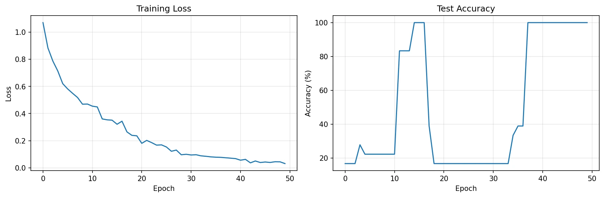
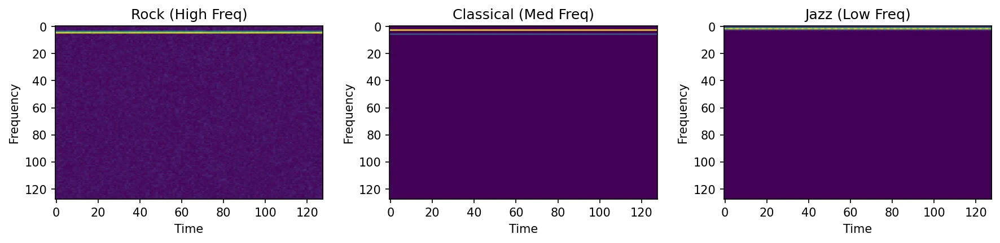

Computer science, machine learning, & the occasional peer-reviewed nose.
Published ML research in medical imaging as a high schooler, now working in healthcare AI on my first co-op. I like taking problems from raw requirements all the way to working code, and yes, the nose thing is real. →
In high school, I co-authored peer-reviewed research with IIT Roorkee: a machine learning model that uses AI facial-landmark detection to put an objective number on nasal deformity from a single photo. Tested on 250 patient images, it picked up 5+ citations on Google Scholar and permanently set my direction: build AI that actually helps in medicine.
Now I'm at Waterloo (Faculty of Math) in the CS co-op program. My current co-op is at a healthcare AI company, working on an AI assistant that untangles drug formularies and prior authorization (one of healthcare's most frustrating workflows), which is exactly why it's worth fixing.
Outside lectures: daily LeetCode in C, sorted by pattern, pushed to GitHub. Pointers don't scare me anymore. Mostly.
Working on a RAG-based Formulary & Prior Authorization Intelligence Assistant built on NVIDIA NIM. I translate messy healthcare workflows (patient support programs, benefits verification, prior auth, appeals) into clean requirements an AI product team can build against.
Taught algorithms and data structures to 25+ students, designed 30+ problem sets, and learned that explaining recursion to teenagers is its own kind of boss fight.
Reviewed 15+ peer-analyzed studies on biomedical devices and medical imaging; synthesized findings into a 20-page technical report with 50+ citations.
Built Python workflows (NumPy, Matplotlib) for experimental datasets: trends in electrical resistance across 5+ metal alloys, cutting manual analysis time by 75% at 95%+ accuracy.
A computer-vision method that quantifies nasal deformity from a single 2D photo. A landmark model pre-trained on iBUG-300W locates the 9 nose points; the 36 distances between them are min-max normalised and scored as z-scores against ~250 post-rhinoplasty images (male patients, 18 to 24) to give a defect score Q from 0 to 100%. It averaged 76.2% across the dataset, giving surgeons an objective measure for preoperative planning. Co-authored with IIT Roorkee, peer-reviewed, published, and cited 5+ times on Google Scholar, all before my first university lecture.
31 distances used 5 excluded as low-confidence (points 32–36 along the base)
A 4-layer CNN (~150K parameters) that classifies Rock, Classical, and Jazz from mel-spectrograms: it never hears the music, it just reads it like an image. Batch norm + dropout, trains in ~2 minutes on CPU. Currently trained on generated audio; real-dataset training (GTZAN) is next on the roadmap.


Watershed segmentation counting 200+ objects per image at 95%+ accuracy, plus a smart traffic-light prototype that cut simulated wait times by 25%.
Pattern-first LeetCode in C (arrays & hashing, sliding window, linked lists) with notes on the idea, time, and space for every problem. Yes, C. On purpose. It builds character.
A car racing game and a soft-body car deformation demo, built in vanilla JS: canvas rendering, game loops, collisions, and an unreasonable number of crashed test cars.
Open to co-op roles in software, ML, and healthcare AI. Also happy to talk computer vision, pointer arithmetic, or basketball, especially all three at once.
No mail client handy? a2kandwa@uwaterloo.ca